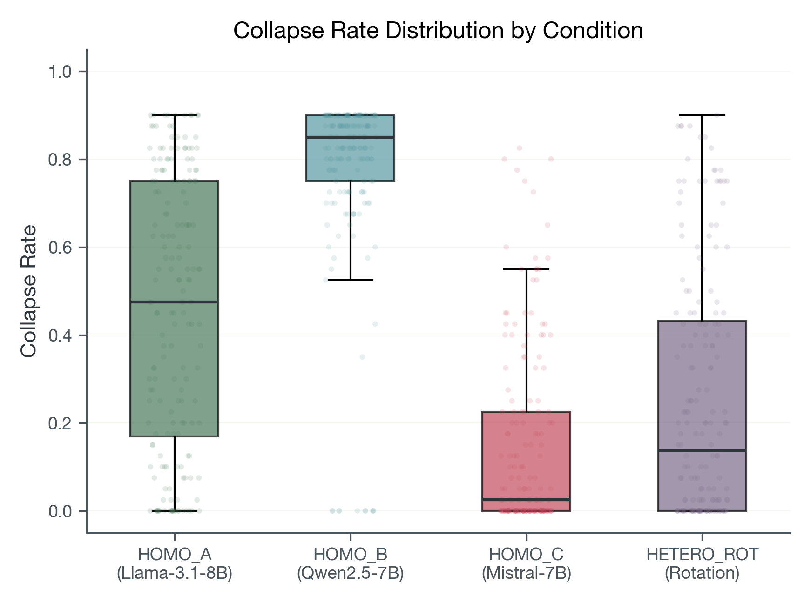
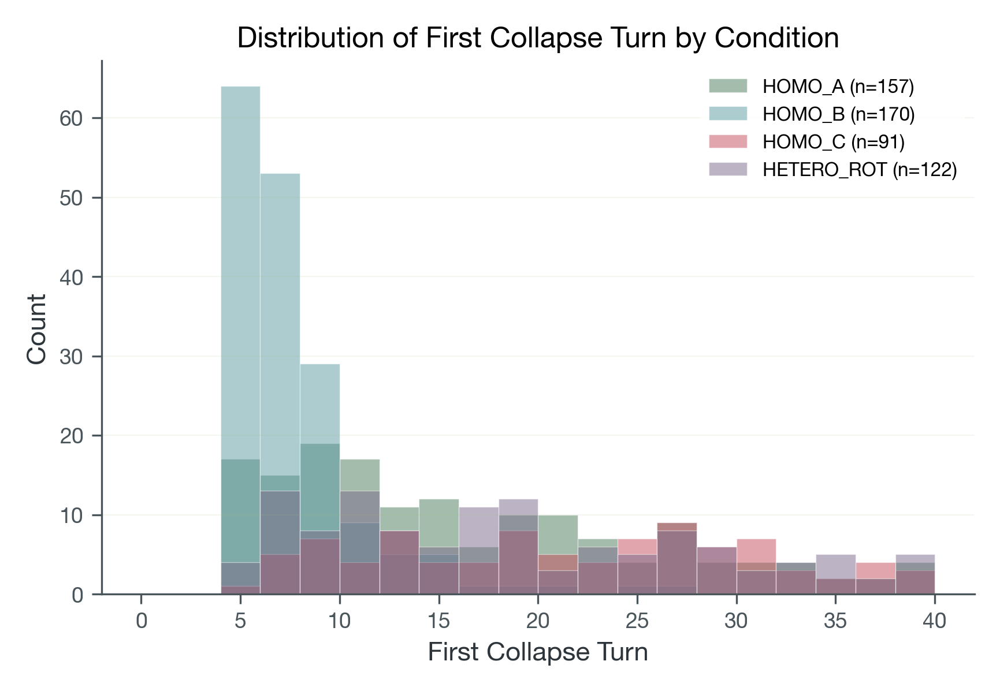

Abstract
When two chat models converse for 40 turns, do they keep producing novel responses, or collapse into repetitive loops? We measured this across 720 conversations spanning four model-pairing conditions (three homogeneous self-play setups and one heterogeneous rotation). All 720 conversations ran to completion under a fixed protocol. Collapse rates varied substantially by condition, but our automated collapse detector did not pass its preregistered reliability check (Cohen’s κ = 0.566 vs. threshold 0.80). Because of this, all findings are descriptive: we report observed patterns, not validated detector claims or causal explanations.
Primary contributions: (1) a locked, reproducible measurement protocol for multi-turn collapse with frozen artifacts; (2) a complete 720-trajectory descriptive benchmark; and (3) a transparent account of a preregistered reliability gate failure and its consequences for claim scope. We believe this is independently informative for researchers designing LLM evaluation pipelines.
Why this matters
Multi-turn conversations are where most real LLM usage happens, and where quality is hardest to measure. If models quietly degrade into repetitive loops after enough turns, that matters for anyone building chat products, agents, or evaluation pipelines. But measuring this degradation reliably turns out to be harder than measuring it at all.
This study contributes a locked protocol and complete dataset for studying the problem. It also contributes a transparent account of a reliability gate failure: our automated detector didn't pass its own preregistered agreement check, which we think is independently useful for researchers designing LLM evaluation systems.
At a glance
What we did
Ran 720 multi-turn conversations (40 turns each) across four model-pairing conditions using three 7B-parameter model families. Measured collapse (sustained high-similarity, low-drift output) using a frozen, preregistered detector.
What we found
- Collapse rates vary substantially by condition (model family matters).
- Heterogeneous model rotation shows the lowest collapse rates.
- The automated detector has high raw agreement (92.8%) but low Cohen's κ (0.566), meaning its reliability is unconfirmed for the base rates observed.
What this does NOT show
- Validated collapse detection: the κ gate was not met, so detector-level claims are off the table.
- Causal explanations for why some conditions collapse more than others.
- Generalization beyond these specific models, prompts, and protocol settings.
How to use this
As a baseline dataset and protocol for future work on multi-turn quality measurement. The condition-comparison patterns are informative for hypothesis generation, but should not be treated as validated rankings for deployment decisions.
How collapse is defined (locked criteria)
We do not label collapse by vibe. A turn is marked as collapsed only when both repetition and low-drift conditions are met under fixed thresholds:
- Repetition: very high semantic similarity to recent turns (adjacent-turn cosine ≥ 0.92 or two-turn-back cosine ≥ 0.90) sustained for at least 3 turns.
- Low drift: semantic drift remains small (d1 ≤ 0.08 and d2 ≤ 0.10, where drift = 1 − cosine similarity).
- Locked rule: thresholds were fixed before final analysis and not tuned after seeing outcome patterns.
Study setup
- Design: 4 conditions × 36 seeds × 5 repeats = 720 target tuples.
- Execution status: 720/720 successful tuples.
- Protocol integrity: all successful runs at 40 turns, no early-stop violations.
- Primary output: condition-level collapse-rate comparisons under a frozen detector definition.
Seed prompts
The 36 seed prompts (SEEDS_V2) were drawn from six topical buckets: factual Q&A, instruction following, creative rewrite, argumentative, conversational, and practical task, with six prompts per bucket. Examples: "Explain why eclipses do not happen every month" (factual), "Give me exactly 3 bullet points on how to prepare for a technical interview" (instruction), "Argue both for and against using open-weight models in production safety-critical systems" (argumentative). The full seed set is available in the companion repository.
Context window handling
The full conversation history is passed to the model at each turn without truncation. At 40 turns with up to 256 tokens each, conversations can reach ~10,000 tokens. The models have context windows of 8,192 (Llama, Mistral) to 32,768 (Qwen) tokens. In practice, collapsed turns produce short outputs, keeping most conversations within limits. We did not implement explicit truncation; if context exceeded the model's window, internal left-truncation would apply. This is a limitation: later-turn behavior in longer conversations may be partially confounded by context overflow.
Condition mapping (model identity)
| Condition | Model setup |
|---|---|
| HOMO_A | Llama-3.1-8B-Instruct self-play (same model on both sides) |
| HOMO_B | Qwen2.5-7B-Instruct self-play (same model on both sides) |
| HOMO_C | Mistral-7B-Instruct-v0.3 self-play (same model on both sides) |
| HETERO_ROT | Round-robin heterogeneous rotation across the three model families |
What collapse looks like in plain language
The core question is simple: when two chat models keep talking for 40 turns, do they keep producing meaningfully new content, or do they fall into repetitive loops?
Below are representative excerpts selected from raw turn logs after scanning all 180 cached trajectories. All examples are descriptive illustrations rather than causal evidence.
Example A: strong repetition loop (HOMO_B: Qwen self-play)
Turn 24: “And there you have it! The function absolutely nails it, delivering the exact value we were hoping for ...”
Turn 39: “Got it! Here's your comment: And there you have it! The function absolutely nails it ...”
Interpretation: near-identical template reuse over long spans, which is exactly the collapse behavior this benchmark is designed to capture.
Example B: low-collapse trajectory (HOMO_C: Mistral self-play)
Turn 24: “Explainability and transparency are also important for regulatory compliance ...”
Turn 39: “Thank you ... don't hesitate to reach out if you have other questions ...”
Interpretation: still topically related, but content continues to move and reframe rather than locking into one repeated response shell.
Example C: intermediate pattern (HETERO_ROT: heterogeneous rotation)
Turn 30: “By working together, we can make a significant difference ...”
Turn 39: “I hope this document provided a useful framework ...”
Interpretation: some thematic repetition, but less rigid template-locking than high-collapse homogeneous runs.
Key baseline results



Interpretation scope
| Claim type | Status | Scope |
|---|---|---|
| Baseline execution closure | Supported | 720/720 tuple completion with protocol integrity checks. |
| Condition-comparative collapse patterns | Supported (descriptive) | Reported under locked detector outputs. |
| Detector reliability validation | Not supported | Preregistered κ gate not met (0.566 < 0.80). |
Decision relevance
What this study shows
- A complete, reproducible dataset of 720 multi-turn conversations across four controlled conditions.
- Descriptive evidence that collapse rates vary by model pairing under fixed protocol settings.
What this study does NOT show
- That the collapse detector is reliable: the preregistered reliability gate was not met.
- Why certain conditions collapse more. No causal or mechanistic claims are made.
- That these patterns generalize beyond the specific models and settings tested.
Highest-value next step: independent human-rater reliability audit to test whether condition-level patterns persist under stronger label quality.
Limitations
- Detector reliability: κ=0.566 (threshold 0.80 not met). No confirmatory detector-validation claim is made.
- LLM-rater circularity: The reliability audit used two LLM raters (GPT-5.2, Claude 4.6 Opus) rather than human annotators. LLMs evaluating LLM-generated text may share systematic biases that inflate apparent agreement, and the "independence" of these raters is limited by potential training-data and architectural overlap. A human-rater reliability audit is the highest-priority follow-up.
- Detector thresholds: Threshold values (cosine ≥ 0.92/0.90, drift ≤ 0.08/0.10, 3 consecutive turns) were preregistered to prevent researcher degrees of freedom, but lack independent validation. A non-confirmatory sweep across 36 threshold configurations showed collapse rates ranging from 0.33 to 0.60 with no condition-rank inversions, suggesting the ordering is robust to small perturbations, but broader validation with alternative detection approaches (lexical overlap, n-gram repetition, perplexity) remains needed.
- Single embedding model: The detector relies solely on MiniLM-L6-v2 embeddings. Different embedding models might yield different collapse patterns.
- Model coverage: Only three 7–8B instruction-tuned models were tested. Whether similar patterns hold for larger models (70B+), base models, models with different alignment approaches (RLHF vs. DPO), or frontier proprietary models is untested.
- No causal claims: We observe condition-dependent differences but do not establish why. Training data diversity, alignment procedure differences, tokenizer effects, and architecture choices are plausible hypotheses for future investigation.